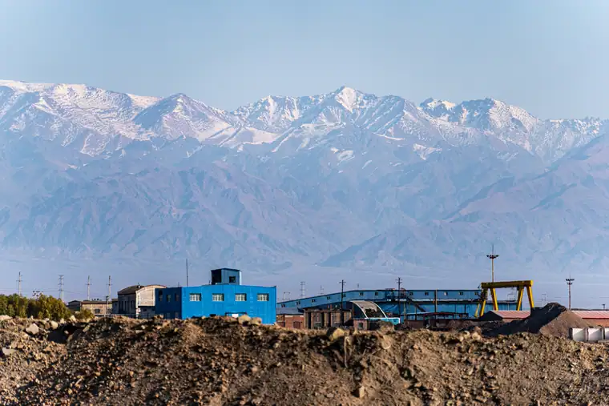
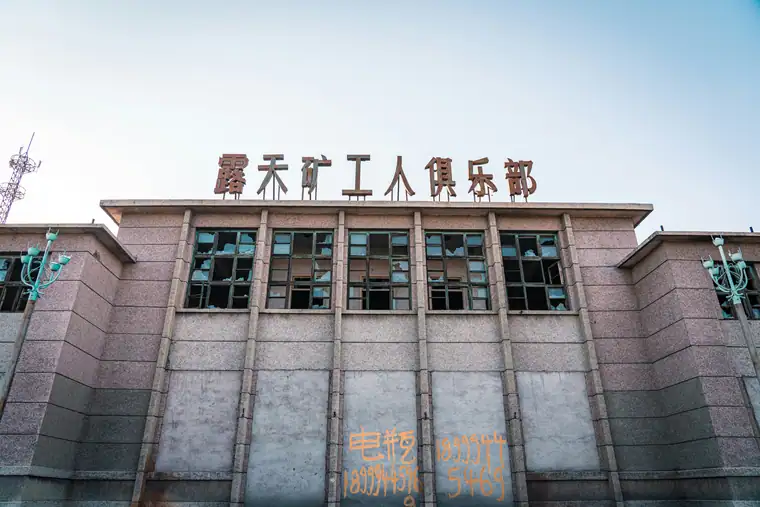

Hami Airport Transfer & Private Car
Hami (HMI) Airport transfers, Silk Road cave temples, Hami melon tours, and Gobi Desert experiences with licensed professional driver. Gateway to Eastern Xinjiang. Fixed price.
Hami in Pictures
Real scenes from Hami — landmarks, streets and everyday life.


Hami at a Glance
A Silk Road oasis on the edge of the Gobi Desert - famous for sweet Hami melons, ancient Buddhist cave temples, and dramatic mountain-desert scenery.
Name Origin
The name "Hami" (哈密) comes from the ancient city of "Khamil" - historically a key Uighur kingdom and Silk Road oasis. The modern city sits at the eastern foot of the Tianshan Mountains (天山) where the range descends into the Gobi Desert (戈壁滩). Hami has been a vital resting point on the Silk Road for over 2,000 years, where caravans transitioning from the Gansu corridor into Central Asia would pause and resupply.
Culture & Heritage
Hami sits at the crossroads of Han Chinese, Uighur, and Mongolian cultural traditions. The city is a major center of Uighur culture in eastern Xinjiang - the old town has traditional Uighur architecture, bazaars, and the historic Hami Great Mosque (哈密大寺). Hami is also famous for Hami melons (哈密瓜) - a sweet cantaloupe variety cultivated in the surrounding oasis for over a thousand years and famously sent as tribute to the imperial court in Beijing during the Qing Dynasty.
Transportation
Hami has its own Hami Airport (HMI) with daily flights to Urumqi (1.5 hours) and occasional connections to other cities. For international flights or destinations not served by HMI, Urumqi Diwopu International Airport (URC) is approximately 600 km away - about 7 hours by road via the G30 Shanghai-Sian Expressway. Hami Railway Station (哈密站) is a major hub on the Lanxin Railway (兰新铁路) connecting Lanzhou to Urumqi - overnight sleeper trains run from points east including Dunhuang.
Geography & Environment
Hami sits at the transition between the Tianshan Mountains to the south and the Gobi Desert to the north. The Tianshan snowmelt feeds the Hami oasis, creating a green corridor through otherwise arid terrain. The city enjoys a dry continental climate with over 3,000 hours of sunshine annually - one of China's sunniest cities. Summers are hot (35-40C), winters cold (-10 to 5C).
Maps & Transit
Best Time to Visit Hami
The climate record of Hami decides when the city is at its most comfortable to walk.
The annual average temperature is 10.2 °C; annual rainfall averages 44 mm; July is the hottest month at 26.8 °C; January the coldest at -9.8 °C; The climate pattern includes continental influence, drought.
Spring
Monthly means in March, April, May run 5–20 °C. Rainfall over those three months totals about 8 mm.
Summer
Monthly means in June, July, August run 25–27 °C. Rainfall over those three months totals about 20 mm.
Autumn
Monthly means in September, October, November run 0–18 °C. Rainfall over those three months totals about 10 mm.
Winter
Monthly means in December, January, February run -10–-3 °C. Rainfall over those three months totals about 5 mm.
Top Hami Attractions
From ancient Silk Road caves to melon fields on the Gobi edge - discover Eastern Xinjiang.
Popular Hami Routes
Fixed-price private car service for Hami most popular journeys.
🏯 HMI Airport - Hami City Center
From ¥251($35.35)~10 km - 15 min - Economy/Business
Hami Airport (HMI) is only 10 km from the city center. Your driver meets you at the airport arrival hall and drives you to your hotel. Quick and convenient for short hops around the Hami area.
🏯 Hami Melon Farm Tour
From ¥251($35.35)~15 km - Half day - Economy/Business
Visit a Hami melon farm on the edge of the Gobi Desert, learn about the thousand-year cultivation tradition, and taste freshly picked melons during harvest season (July-September). Your driver takes you to the best farms outside the city.
⛰️ Tianshan Mountain Day Trip
From ¥251($35.35)~60 km - Full day - SUV/4WD recommended
Drive into the Tianshan Mountain foothills south of Hami. Visit alpine meadows, see snow-capped peaks, and enjoy a picnic lunch by a mountain stream. The scenery transitions dramatically from desert to alpine in just a few hours of driving.
⛰️ Hami City Heritage Tour
From ¥251($35.35)~5-20 km - Half day - Economy/Business
Visit the Hami Great Mosque, the old town Uighur market streets, Hami Museum, and the ancient city ruins. Your driver and optionally an English-speaking guide explain the Silk Road history and the blend of cultures in this borderland city.
Transparent Pricing in Hami
Published rates, no estimate games. Check the numbers yourself before you book — and the price you see is the price your driver is paid from.
Fixed Price List — 哈密 (Hami)
Published rates from our 2026 quote sheet. Renminbi first, USD for reference at 1 USD = ¥7.10. Every price below already includes tolls, parking, driver service and free airport waiting time (up to 60 minutes after your flight lands) — nothing is added on the day.
🛬 Airport & Intercity Transfer
One flat fare for airport pickup, drop-off or city-to-city — intercity costs the same as the airport run. 35 km and 60 minutes included; beyond that we charge by the minute and the kilometre at the rates shown.
| Vehicle | Seats | Bags | Fixed fare | USD | Beyond 35 km / 60 min |
|---|---|---|---|---|---|
| 4座 经济型专车 | 4 | 2 | ¥251 | ≈ $35.35 | ¥1.22/min · ¥5.53/km |
| 4座 舒适型专车 | 4 | 2 | ¥359 | ≈ $50.56 | ¥1.34/min · ¥6.11/km |
| 6座 商务车 | 6 | 3 | ¥442 | ≈ $62.25 | ¥1.43/min · ¥6.5/km |
| 8-11座 商务车 | 11 | 4 | ¥764 | ≈ $107.61 | ¥1.86/min · ¥8.45/km |
| 12-18座 商务车 | 18 | 4 | ¥874 | ≈ $123.1 | ¥2.07/min · ¥9.43/km |
| 19-55座 大巴 | 55 | 5 | ¥936 | ≈ $131.83 | ¥2.36/min · ¥10.73/km |
🚗 Hourly Private Charter
Book the car and the hours, keep the car for the day. Unused kilometres can be carried into the next tier, so a long day never turns into a penalty. The driver stays with you — you set the stops.
| Vehicle | 2h / 35km | 4h / 50km | 6h / 75km | 8h / 100km | 10h / 125km |
|---|---|---|---|---|---|
| 4座 专车 | ¥299 | ¥481 | ¥637 | ¥728 | ¥780 |
| 6座 商务车 | ¥390 | ¥624 | ¥832 | ¥949 | ¥1014 |
| 8-11座 商务车 | ¥562 | ¥899 | ¥1198 | ¥1367 | ¥1460 |
| 12-18座 商务车 | ¥674 | ¥1078 | ¥1438 | ¥1640 | ¥1752 |
| 19-55座 大巴 | ¥809 | ¥1294 | ¥1725 | ¥1968 | ¥2103 |
Why travellers book Hami with Chinawheely
Six things you get with every booking — in Hami and across all 346 cities on the platform.
Licensed travel agency, not a ride-hail app
Chinawheely is a registered travel agency (L-HUB-101603). Your booking is a travel contract with a licensed operator — not a broker handing your number to whoever answers the phone.
One locked price, shown before you pay
The price you see is the price you pay. Tolls, parking, driver service and airport waiting time are already inside it. No surge pricing, no meter, no cash-on-the-day surprise.
Flight tracked, waiting time on us
We watch your flight number in real time. If it lands late or is delayed, your driver shifts with it and the waiting time stays on us — not on your bill.
A licensed driver who knows the city
Every car is driven by a professional local driver who knows the routes, the shortcuts and the parking that actually works near the attractions — with English communication and a name board on arrival.
Free changes up to 48 hours before
Plans move. Reschedule or cancel any booking free of charge up to 48 hours before your scheduled pickup, straight from your confirmation link.
A real human on WhatsApp, 8AM–12AM Beijing time
One message reaches a person who can re-price, re-route or re-plan your trip on the spot. No ticket queue, no chatbot loop.
Book Hami at the published price
Pick your vehicle, see the fare line by line, and pay by PayPal or Alipay. Free changes up to 48 hours before pickup — or ask on WhatsApp and we will hold a car for you.
The quote is valid for 48 hours, and you can change or cancel free up to 48 hours before pickup.
Getting to Hami: Airports & Railway Stations
Hami has its own small airport and is a major railway hub on the Lanxin Railway.
Nearest Airports
🏯 Hami Airport (HMI
10 km to city center - 15 minutes by road
Hami Airport is a regional airport with daily flights to Urumqi (1.5 hours) and occasional connections to other cities. Flights are operated by China Southern, Shandong Airlines, and other carriers. The airport is small and efficient - private car is the most convenient option to reach the city center.
💧 Urumqi Diwopu International Airport (URC)
600 km to Hami - 7 hours by road
URC is Xinjiang main international gateway with flights across China and international routes. If Hami Airport (HMI) does not serve your route, the drive from Urumqi to Hami takes approximately 7 hours via the G30 Expressway. An overnight stop in Hami breaks the long journey nicely.
Railway Stations
🗼 Hami Railway Station (哈密站)
Main hub - Lanxin Railway
Major railway hub on the Lanxin Railway (Lanzhou-Urumqi). Daily trains to Urumqi (4-5 hours), Lanzhou (12-14 hours), Beijing (30+ hours), and Shanghai (36+ hours). Overnight sleeper trains from the east arrive in the morning - a popular way to travel.
🗼 Hami East Station (哈密东站)
Freight and some passenger services
Secondary station serving freight and some passenger routes. Primarily used for freight logistics given Hami strategic location on the trans-Xinjiang railway corridor.
🗼 Need a Station Pickup?
We meet you at the exit with a name board and help with luggage.
Book Station TransferHami Best Photo Spots
Capture Silk Road oasis life and dramatic desert-mountain scenery.
🏯 Hami Melon Fields at Harvest
Best July-September
During the Hami melon harvest (July-September), the fields on the edge of the Gobi Desert are dotted with ripe melons. The contrast of green melon fields against the brown desert backdrop with Tianshan Mountains in the distance creates striking agricultural landscape photos. Early morning light is best.
⛰️ Tianshan Mountain Foothills
Best at sunrise
From the foothills of the Tianshan Mountains just south of Hami, you can photograph the sunrise over the Gobi Desert with the city in the foreground and snow-capped peaks above. The dramatic lighting transitions from warm desert tones to cool mountain blues in a single frame.
🌊 Old Town Uighur Market Streets
Best mid-morning
The old town Uighur quarter near the Hami Great Mosque has traditional courtyard houses, artisan workshops, and colorful market stalls. Mid-morning when the light streams into the narrow lanes creates atmospheric street photography. The traditional hat makers and bread ovens are particularly photogenic.
🕌 Hami Great Mosque Exterior
Best in soft light
The mosque facade with its distinctive Central Asian-influenced architecture and geometric tile patterns is most beautiful in the soft light of late afternoon. The contrasting minaret against the Xinjiang sky is a memorable image of Islamic heritage in western China.
🏜️ Gobi Desert at Dusk
Best at golden hour
The Gobi Desert north of Hami offers dramatic desert photography at sunset. The dunes and gravel plains take on deep orange and purple tones in the evening light. A 30-minute drive north of the city takes you into the desert proper away from any modern structures.
🦅 Night Sky Over the Gobi
Best in winter
The Gobi Desert near Hami has extremely low light pollution - one of the best spots in China for night sky photography. The Milky Way is clearly visible on moonless nights, particularly in winter when the air is clearest. A 40-minute drive north puts you in complete darkness under a spectacular starscape.
Food & Shopping in Hami
Must-Try Hami & Xinjiang Cuisine
Hami Melons (哈密瓜)
The signature product of Hami - sweet cantaloupe-style melons grown in the Gobi-edge oasis for over a thousand years. The dry climate and large temperature variation between day and night concentrate the sugars to exceptional levels. Available fresh July through October; dried and candied versions available year-round.
Uighur Lamb Kebabs (羊肉串)
Lamb kebabs are the soul of Xinjiang street food. At Hami old town night market, skewered lamb loin is grilled over charcoal with cumin, chili, and salt. The lamb is typically from Hami's own grazing lands - tender, slightly gamey, and intensely flavored. Best eaten with Xinjiang nan bread and a cold drink.
Hand-Pulled Noodles (拉条子)
Uighur hand-pulled noodles in tomato and lamb broth with vegetables. The thick chewy noodles are made fresh daily and served in a savory broth with chunks of tender lamb, tomatoes, and peppers. A hearty and warming dish, particularly welcome in Hami's cold winters.
Naan Bread (馕)
Fresh nan bread baked in a clay oven (tandoor) at Uighur bakeries throughout Hami. The large round flatbreads have a chewy center and crispy edge, often topped with sesame seeds or black cumin. Sold by weight at local markets - eat them fresh and warm within a few hours of baking.
Roast Whole Lamb (烤全羊)
A ceremonial Xinjiang dish - an entire lamb marinated with spices and slow-roasted over charcoal until the skin is deeply caramelized and crisp. Traditionally served at celebrations and special occasions. Hami's version uses local mountain lamb from the Tianshan pastures.
Hami Melon Wine & Spirits
Some local distilleries in Hami produce melon-infused spirits and wines using the abundant Hami melon harvest. These are niche products - your driver can take you to a local shop that carries them. A unique local souvenir if you can find them.
Shopping Destinations
Hami Old Town Night Market
The night market in the old town Uighur quarter comes alive after sunset. Food stalls serve lamb kebabs, hand-pulled noodles, nan bread, and Hami melons. A great place to experience the local food culture and pick up dried fruits and nuts as travel souvenirs.
Hami Melon Specialty Shops
Specialty shops throughout the city sell Hami melons, dried melon products, melon preserves, and melon-seed snacks. During harvest season (July-September), the best melons are available directly from farms on the city outskirts.
What to Buy in Hami
Fresh Hami Melons (July-October)
The sweet cantaloupe-style melons are the signature souvenir. During harvest season, you can buy them at farms or the night market. Note: they are fragile and heavy to transport. For travel, look for vacuum-packed dried melon slices which keep well.
Uighur Traditional Hats
The distinctive doppa (朵帕) - traditional Uighur embroidered caps - are made by artisans in the old town. Available in vibrant colors and intricate patterns. Each region of Xinjiang has distinctive embroidery styles - Hami doppa are known for their geometric floral designs.
Dried Fruits & Nuts
The dry Hami climate makes it ideal for drying fruits. Look for dried apricots, grapes, persimmons, and jujube dates. Walnuts and almonds from the Tianshan foothills are also excellent. Sold by weight at the old town market.
Uighur Textiles & Embroidery
Traditional Uighur textiles including embroidered pillowcases, table runners, and wall hangings with geometric and floral patterns in vibrant colors. Available at the old town market and specialty craft shops. The quality and price vary considerably - ask your driver to help negotiate.
Medical History & Wellness of Hami
Traditional medicine, desert healing, and wellness traditions of Eastern Xinjiang.
Hami Melons as Medicinal Fruit
Melons as medicine. Traditional Chinese Medicine classifies Hami melons as having cooling properties that benefit the heart and lungs. The high water content combined with vitamins and minerals made melons valuable for desert travelers as both food and hydration. The melon's natural sugars provided quick energy for caravans crossing the Gobi.
Available fresh July-October at farms and markets throughout Hami.
Uighur Herbal Medicine
Central Asian healing traditions. The Uighur medical tradition combines elements of Central Asian, Persian, and Chinese medicine. Desert herbs from the Gobi - including certain saxaul species and wild capers - have been used in traditional remedies. Uighur herbalists in the old town still prepare traditional formulations.
Available at traditional medicine shops in Hami old town.
Gobi Desert Air & Climate Therapy
Dry desert climate. Hami's extremely dry climate (annual rainfall under 50mm) has been valued in traditional medicine for certain respiratory conditions. The low humidity and high altitude of the surrounding Tianshan foothills create conditions considered beneficial for some skin and respiratory ailments.
The Jangjup Desert Hot Spring (50km from city) offers mineral-rich thermal waters.
Tianshan Mountain Herbs
Alpine pharmacy. The Tianshan Mountains south of Hami produce medicinal herbs including saffron (藏红花), cordyceps (冬虫夏草), and various alpine medicinal plants. Local herbalists gather these from the mountain meadows at specific seasons. The high altitude and clean environment produce potent herbal materials.
Available at TCM pharmacies and from licensed herbalists in Hami.
Hami Local Secrets
Insider tips to help you experience Hami like a local.
Visit Hami Melon Farms in Harvest Season
Hami melons are at their best from July to September. The farms on the eastern outskirts of the city open to visitors during harvest - you can taste melons straight from the field and buy freshly picked fruit. Ask your driver to take you to a working melon farm, not just the tourist-oriented melon pavilion.
Eat Lamb Kebabs at the Old Town Night Market
The old town night market has the best lamb kebabs in Hami - charcoal-grilled on the spot by vendors who have been perfecting their recipe for decades. Go after dark when the market stalls light up. A half-dozen kebabs and a bottle of local soda make an perfect Xinjiang evening.
Drive into the Tianshan Foothills
The scenery just 30 km south of Hami transforms completely from desert to alpine. A drive into the Tianshan foothills rewards you with views of snow-capped peaks, green meadows, and the city spread below. Pack a picnic and stop by a mountain stream. An SUV or 4WD is recommended for the mountain roads.
Photograph the Milky Way from the Gobi
Hami is one of China's best night sky photography locations - the Gobi Desert north of the city has virtually no light pollution. On a moonless winter night, the Milky Way is stunning. A 40-minute drive north puts you in complete darkness. Bring a tripod and warm clothes - desert nights are freezing even in summer.
Buy a Uighur Doppa Hat in the Old Town
The old town has traditional Uighur hat makers who craft the distinctive doppa (朵帕) embroidered caps by hand. Each region of Xinjiang has distinct patterns - Hami doppa feature geometric floral designs. They make excellent and uniquely local souvenirs - ask your driver to help you find the best artisans.
Stop at the Hot Spring on a Desert Tour
The Jangjup Desert Hot Spring is about 50 km south of Hami in the desert foothills. It is rarely visited by tourists but popular with locals. The mineral-rich waters are heated geothermally and said to have therapeutic properties. Combine it with a Tianshan foothills drive for a relaxing day.
Book Your Hami Airport Transfer
Fixed price, licensed professional driver, free flight tracking. From Hami Airport (HMI) to any Hami hotel or attraction.
Get Instant QuoteQuestions? WhatsApp +86-155-2777-1775
More China destinations
Compare routes, published prices and local driver tips across the cities we cover.